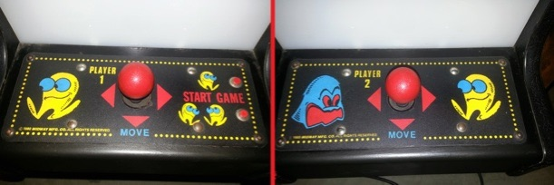
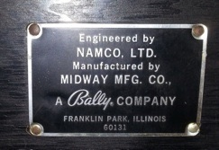
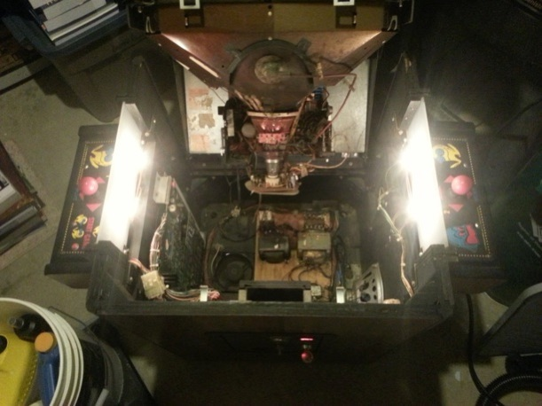
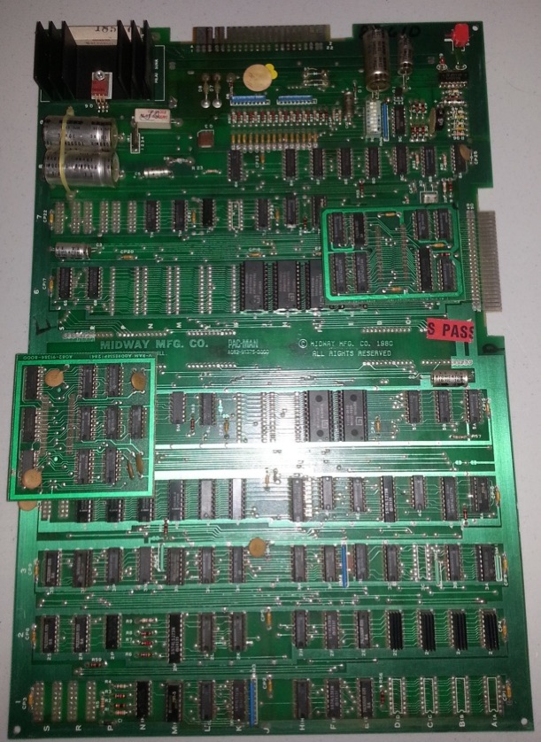
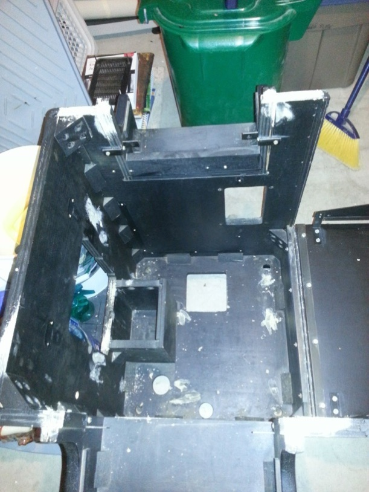
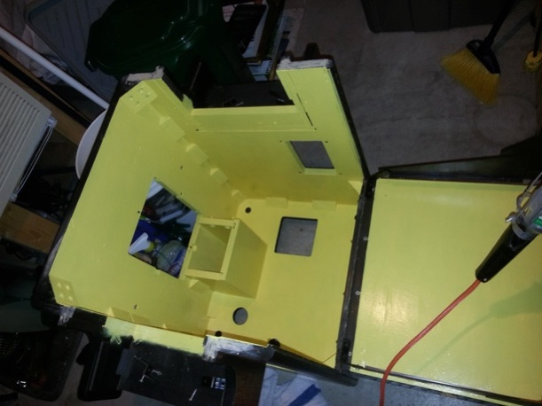
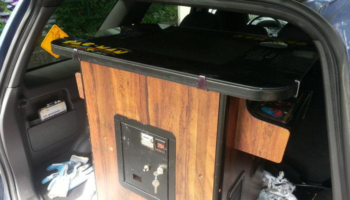

1980 Pac-man restoration (PART 1)
Friday, June 21, 2013
Probably the most iconic video game in history is Pac-man (Space Invaders and Super Mario Bros. are both close seconds).
And Pac-man arcades are hard to find since many people want them. I was very lucky this past week since I managed to find someone selling a 1980 original Pac-man arcade cocktail table. The guy sold it cheap because he thought the CRT monitor was dead (it just needed re-adjusting).
As an arcade collector I know it is very difficult to find a 33-year old arcade in great condition, but this is a good example of one - there was no water damage or nicks/gouges in the wood. It’s even harder to find one that has pristine control panels with the original overlays in tact - but this one has them:


Even the metal plate under the top lip is in great condition as shown to the right. The only visible wear was the paint under the top glass - part of the instructions protrude beyond the wood part, so people used keys to scratch some of the paint off. It’s barely noticeable, and I think I’m going to leave it as-is because it is nice to have some battle-marks on any vintage arcade to show that it has been used in a real environment.Now, lets see what the inside looks like:

The inside definitely doesn’t look as nice as the outside.....but for a 33-year-old arcade machine, you have to expect a bit of dust and dirt inside.
So what should you do with a cool piece of history that is a bit dirty and dusty?
Restore it, of course!
First things first, I removed pretty much everything inside the machine after carefully documenting and labeling each item. This includes the wiring, PCB, speaker, grills, coin door, metal latches, CRT monitor, and so on. A few things of note - the control panels are in excellent shape and have the nice metal joysticks that use a rubber diaphragm for smooth movement. There are only a few very small rust spots near the rubber diaphragm that I’ll take care of later:

Also, the PCB is in immaculate condition for its age - I especially love the PAC-MAN label in the middle:

The coin door has a few rust spots on it - I’ll take care of those as well as chrome up all metal parts in it. Similarly, there is some rust in the grill spacers and metal dings that I’ll also need to take care of:

OK - so after removing everything, I vacuumed out the dust in the cabinet, and patched any holes from screws (mostly used for cable tie-downs) as well as any spacers in the plywood layers (just to be perfect) - this is what it looks like at this stage:

Next, I put four very light coats of yellow high-gloss enamel on every part of the inside of the cabinet - this will make it easier to see components as well as preserve the wood for another 30 years. By the way, it had to be yellow.....after all.....what would you expect inside a Pac-man?:

Next, I used black matte enamel on the edges and control panel bases. Now, it’s time to re-add the PCB brackets (which I cleaned in hot soapy water), the PCB itself, as well as the sanded and re-coated/polished grills, latches and metal braces:

That’s it for Part 1 of the restoration - next up, I’ll be cleaning up and re-adding the wiring, speaker, fan, coin door, control panels and monitor. I’ll also replace the t-molding on the control panel assembly too. Stay tuned!
